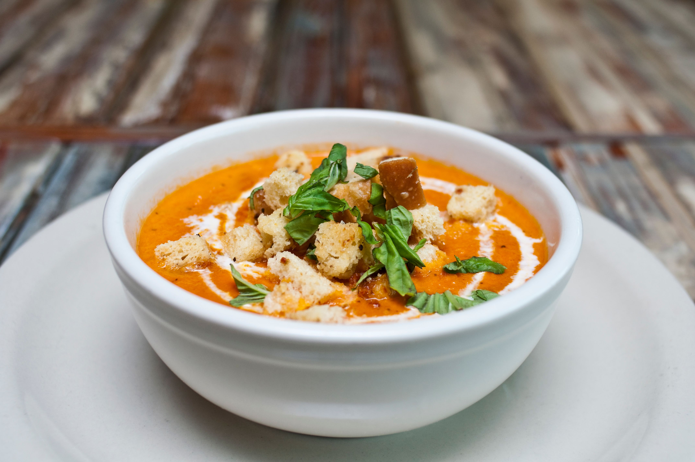
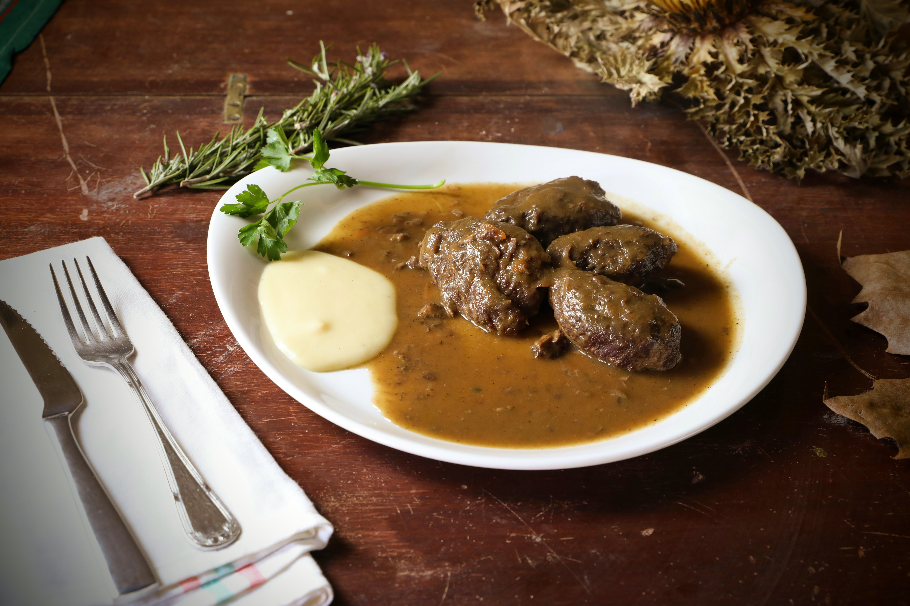

Salmorejo
La emulsión fría perfecta a base de tomate, pan de telera, ajo y aceite de oliva virgen extra.
Leer receta completa de Salmorejo CordobésDescubre la esencia de los platos populares andaluces, su historia y técnicas transmitidas de generación en generación.
Ver catálogo de recetas
La emulsión fría perfecta a base de tomate, pan de telera, ajo y aceite de oliva virgen extra.
Leer receta completa de Salmorejo Cordobés
Corte meloso cocinado a fuego lento con vino dulce, verduras y especias tradicionales.
Leer receta completa de Carrillada al Pedro Ximénez